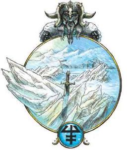
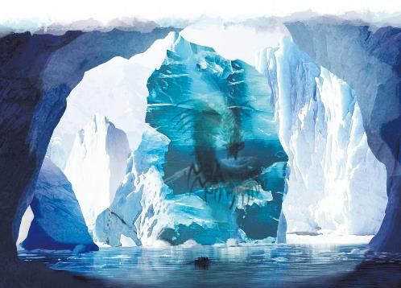

瑞西亚也被称作冰原，因为这就是这里能发现的绝大部分事物。无尽的极地荒原定义了瑞西亚，那些看起来像是山脉的地方只是固态冰川的顶峰。但和费尼亚一样，瑞西亚的外表具有欺骗性，因为它充满了冰雪，许多贤者认为这便是定义了瑞西亚的精神核心。但在拉玛尼亚，同样有着无尽的暴雪和自然形成的宏伟冰川。相比之下，定义了瑞西亚的精神核心是孤立、停止和留存。这个无尽冰结的位面并不是个关于雪的位面，它是彻底的死寂、空旷不变的风景。瑞西亚罕有人烟，而这便是它的精髓。这是一个荒凉而孤独之地，在这里你可以走上几天，也不会遇见一个其他生物。沙漠中的沙砾好歹会随着微风移动，而瑞西亚冰封的景色总是一成不变。然而，和石头的高原不同，它反应了一种事实，它可能过去会发生变化，但如今已经被捕获、陷入封冻、停滞不前。
尽管这个与世隔绝、一成不变的位面对冒险者们来说似乎没什么吸引力。但要记住，这个位面代表着留存，而被遗忘多年的古老秘密可能会被封冻在冰里。尽管这个王国是一片不毛之地，但它并没有完全荒芜。数千年来，顽强的生物来到了瑞西亚，在这个荒凉的国度扎下根来。
瑞西亚十分寒冷，毫无保护的生物很快便会被致命的严寒所击倒。这个位面具有以下几个特性。
致命严寒Lethal Cold。暴露在瑞西亚的寒冷环境下的生物每经过10分钟必须成功通过一次DC 10的体质豁免，否则将提升一级力竭状态。拥有冷冻伤害抗性或免疫，以及穿着冷天用具（厚外套、手套等）和自然适应寒冷气候的生物，其进行该豁免时直接判为成功。此外，所有生物都获得火焰抗性，通常具有火焰抗性的生物的生物变为免疫火焰伤害。
增强冰霜Empowered Ice。当一个生物施展一个1环及以上造成冷冻伤害的法术时，它视作施展了比原本法术位高一环的法术。
留存Preservation。一个生命值为0的生物在瑞西亚回合结束时会自动伤势稳定，进入休眠状态。如果一个昏迷的生物和冰面接触超过1分钟，它就会被拉到冰面以下，并进入被冰封的暂滞状态。当以这种方式被冰封时，它的时间不会再流动，年龄也不会增长。
缓滞Stagnation。当一个生物完成长休后，它不会恢复生命值或降低力竭等级。但它确实可以正常回复生命骰，并用它们来恢复生命值。
寂止肉身Stillness of Flesh。时间与物质位面的流速相同，它的位层上也保持一致。然而，时间流逝对凡人的身体来说没有影响，它们在瑞西亚并不会衰老或成长。疲劳、饥饿和力竭只会让生物的生命值降低为0，而不会杀死它。矮人免疫这一特性，在瑞西亚，他们能够像在物质位面一样成长、衰老和死亡。
瑞西亚本地等等生物十分罕见。这个位面的概念是荒凉的废土，而活跃的人口将会削弱这一目标。少数几个位层中有从艾伯伦来到瑞西亚的生物，它们能够在极地环境中茁壮成长。在冰封海中有百足魔兽在狩猎，而霜篷冰川上有雪人。但这些东西总是来了又去。瑞西亚两支主要的力量是位面本地的精魄和在冰上开辟家园的霜巨人们。
乍一眼看去，瑞西亚贫瘠而空旷。但一些旅行者讲到其中有一个存在，一种被监视的感觉，而且大部分时候他们觉得那并非善意。在瑞西亚的冰原上，寒冰本身并没有什么邪恶本质，但它有一种天生的渴望，渴望消耗热量，并将生物埋进冰里。在《位面法典》中，杜瑞斯·埃莱尔·ir·柯兰将之称为“杀戮之寒”。这个孤独的位面中最强大的力量对被他人了解并不感兴趣，也从未与外界直接互动，但人们可以通过显化的生物感受到它的存在。其中包括冬灵鬼婆、冰霜蜥蜴、冰魔、链魔或孤独（哀恸魔）。这些显能现象生物的外表和本质反映了瑞西亚的主题——一个链魔可能浑身覆着霜雾，用冰铸成的锁链禁锢敌人。无论它们的形象如何，这些精魂都不会和外人交谈，它们的智力只反映了追踪猎物时的狡猾，但他们是杀戮之寒的精魂，也是痛苦孤立的精魂，也是那些将一切埋藏和保存起来的寒冰的精魂。
当这些显能现象归于沉寂时，它们会被吸回到自己的位层中，当需要的时候再次显现。在此期间，作为停滞和隔绝的精魂，它们会沉浸于于数个世纪的沉寂，直到什么东西迫使它们回归物理的形态。
“十一人会”是一群具体超凡技艺和力量的至高天们的联盟。其中每一位都选择了一个不同的位面作为研究对象（他们将费尼亚留给了苏·阿特同盟，而达·库尔留给了库伊·赛帝国）。大奥术师伊尔·艾拉选择了了瑞西亚，而数千年来，她的后代霜巨人们繁衍生息。当阿贡尼森的大军开始将希恩德瑞克焚作废土之时，伊尔·艾拉召集了自己忠诚的孩子们，一同前往瑞西亚，相信他们能够在冰封之原的隔绝中找到庇护。
伊尔·艾拉之子们从此在瑞西亚的各个位层扎下根来。这里有几座城堡，一些巨人在其中共同生活，而另一些则建立起自己独立的基地，在冰冷的荒原中度过不朽带来的无尽而乏味的时光。其中一已经成为了艺术家，他们写诗，或者雕刻需要数个世纪此案完成的宏伟艺术品。而其他巨人则更追求身体消遣，比如摔跤、狩猎邪魔或制作华丽的游戏。这些居民们总是把外来者十分感兴趣，将他们当做消遣。残酷的巨人以狩猎外来者取乐，而其他人可以成为优秀的东道主。许多艺术家都渴望得到观众，但如果客人没有对他们的作品表现出适当的欣赏，一位优雅的艺术家也可能会变得致命。由于这些瑞西亚的霜巨人是希恩德瑞克伟大文明的遗民，DM可能会希望提高他们的智力和技能来更加适应其故事。
伊尔·艾拉在她的要塞中继续着奥术的研究。她可能已经找到驱使瑞西亚的巨大力量的办法，来保护她的孩子们免受邪魔的伤害。或者她也可能对自己作为不朽的存在感到厌倦，正考虑着进到冰中陷入静滞。
瑞西亚的霜巨人们有矮人奴隶。他们的起源是个谜：巨人们知道是伊尔·艾拉制造了最初的矮人，但他们并不知道——至少不记得——她是如何自己造出他们并把他们放到艾伯伦上的。除了他们被巨人所奴役之外，矮人们对其他存在几乎一无所知，而瑞西亚也几乎没有给他们什么选择。神秘的是，这些矮人和所有的矮人们都不受瑞西亚的寂止肉身效应的影响。不同于这一位面上的其他生物，他们的年龄可以和像在艾伯伦上一样增长，也可以生下和养育孩童。因此，瑞西亚的每一个巨人都来自希恩德瑞克，在他们死去之后，没有新的巨人能够取代他们，而居住在瑞西亚的矮人们生长于斯，对古代的历史一无所知。

瑞西亚的位层很少，但面积辽阔，其间由巨大的冰门连接。有时候，旅行者们会发现一眼冰池，上面显出了其他位层的画面，有时穿过这道冰层就会让人抵达另一位层，而其他时候，图像只是会消失不见。虽然对瑞西亚的描述常常以可怕的风暴来表现，但这些只存在于无羁暴雪位层，瑞西亚的大部分地区都完全静止、死寂而致命。瑞西亚的精魂化身存在于每一个位层。巨人们集中在霜篷冰川，但在其他位层也能找到一些离群巨人。
下面描述了几个最值得注意位层，但其他位层依然存在。其中一个是一片辽阔无边，毫无特征的冰原，也许最符合“冰封之原”的名号。一个小位层中保存着未知人形生物的巨大冰雕，这可能反映了一种原始的存在，也可能是一位数千年来雕刻不息的霜巨人匠人的手笔。另一个位层上有一系列河流，流经一片冰冷的平原，但他们绝非天然水。这些液体过于寒冷，以至于里面的寻常材料都会冻得裂开来。
这座山脉看上去无穷无尽，它由固态的冰组成，四面是厚重的雾气。也许土地就存在于下面的某个地方，又或者她会无休止地延伸至黑暗之中。霜篷冰川是伊尔·艾拉的霜巨人们主要的家园，他们用高山的冰雕出城堡。其中三座最大的堡垒被称作自由之炉、悔恨堡和寒冬堡。悔恨堡有许多巨人，他们因为无聊的永生而选择进入冰中静滞。而寒冬堡则是伊尔·艾拉本人的居所。许多小型堡楼散布在各个山峰之上，作为独居巨人的居所。
云雾遮蔽了霜篷冰川之上的天空，但这里的光照永恒不变，夜幕永不降临。旅行者们必须同时应对高海拔和致命严寒的影响。
寒风呼啸，雪花和冰雹充斥着空气。冒险者可能会发现自己在冰冷的高原或山口，被困在这场残酷的风暴之中，能见度被限制在60尺内，因此对前路一无所知。冒险者们可能会偶然发现一处洞穴或遮风处，但其中总有可能已经被一只百足魔兽或其他在此滞留的怪物所占据。由于这是最危险的一个位层，所以这里也是一个寻找其他冒险者们被静滞禁锢在冰下的封冻身体的好地方。
无羁暴雪的风暴永不停息，冒险者们必须面对强风和致命严寒。该位层停滞在夜晚和白昼之间，由于风暴的影响，最好的时候光照也只是昏暗，而大雪肆虐的区域还会陷入重度遮蔽。
想象一片冻结在一个瞬间的大海。这里没有任何海岸存在的迹象，只有海浪沿着冰洞的漩涡停在了波峰中，这里有无数的船只——当月亮位置正好，瑞西亚相接之时，它们被从艾伯伦的海洋中带走。有的被击碎或破坏，在沉没过程中陷入了静滞，其他的则处于完美的状态，被冻在最薄的冰层之下。历史上所有的船只都能在这寻到，从林兰德家族的大帆船到古代希恩德瑞克巨人的巨大船只。这里还可能有古老的幸存者，他们躲在被困的船只之中，或者一位霜巨人可能在冻结的海水中升起了一座冰塔。但这里的精魂们也同样强大，它们狩猎幸存者，并将它们拖至冰封的海底。
永冻海处于永恒的夜晚，卓瓦戈之月一动不动地悬挂在无云的空中，将昏暗的光芒洒落到水面上。
以下是瑞西亚影响物质位面的一些方式。
瑞西亚的显能区域通常在寒冷地区或者极地，在那里，位面的影响并不特别明显。在更温暖的地方，不管区域原本的温度如何，瑞西亚的显能区域会制造出一片冷得不同寻常的区域，通常会带有位面的致命严寒与增强冰霜特性。
在少数瑞西亚显能区域能够感受到寂止肉身效应，所有生物衰老成长和繁衍会减缓甚至停止——除了矮人之外。虽然防止衰老的显能区域效应会被认为是一种馈赠，但这些区域通常很小，并且伴随着致命的寒冷，人们很难在这里生活。
瑞西亚显能区域很少把人传送到瑞西亚，但在位面相接时仍可能发生。
当瑞西亚相接时，气温会极剧下降，原本寒冷但安全的区域可能会具有致命严寒特性、增强冰霜和肉体静滞特性。在此期间，罕见的情况下，被困在严寒地区的生物可能会意外地被送到瑞西亚。然而这种影响难以预测，如果它符合你的故事情节，它就有可能发生。但这并不是大多数人会害怕的事情。
当瑞西亚远离时，严寒会失去它的锋芒。生物在对抗极寒效应的豁免掷骰和对抗造成冷冻伤害的法术豁免掷骰中具有优势。
通常来说，瑞西亚每五年就会有一整个札兰提尔月的相接。而在五年之间，相接两年半之后，它会在一整个拉维翁月都远离艾伯伦。但这并非总是如此规律。历史学家们记载过一些年份，这一周期被拉长了，在657YK，瑞西亚进入过一个长达三年的相接期。
瑞西亚冰是鲜艳的蓝色，其中充满位面的精华。这种冰在任何条件下都会保持温度，并且永远不会消融，哪怕在物质位面上也是如此。一个由瑞西亚冰雕出的物件可以用作施展冰或水有关法术的法器，它也是制造与寒冷和停滞有关的魔法效应的强大材料。虽然它可以在显能区域和位面本身上生出，但即使在瑞西亚，瑞西亚冰也相对罕见：它可不是你能在霜篷冰川上随便捡到一块大冰雹。
霜巨人们拥有他们从希恩德瑞克带来的魔法物品和神器，伊尔·艾拉多年以来肯定创造出了新的奇迹。冒险者们也可以从这里找到来自任何文明的宝藏，要么埋没在永冻海中，要么仍在那些被埋葬在冰中的人们手中。
瑞西亚是一片蛮荒、隔绝和不欢迎外人的位面。这里并不希望冒险者们的到来。然而，这儿仍然有些方法能影响故事。
冰封的历史Frozen History。伊尔·艾拉和她的巨人们拥有在巨人纪元之后艾伯伦上再不可能找到的奇妙的文物。他们和精灵的起义密切相关。一位巨人可能亲自和泰尔那多精灵们的先祖作战，并且可能拥有从他们身上拿走的战利品。如果冒险者们需要巨人时代的信息和物件，他们可能会在这里寻到。冒险者们可以寻找一个只存在与伊尔·艾拉的巨大法术书中的仪式，或者这位至高天可能将一些巨人时代的囚犯保存在瑞西亚的冰中，这可能是一种认识夸巴林精灵或一位第一批卓尔的方法！
被埋藏的宝藏Buried Treasure。在寻找一件至关重要的神器时，冒险者们可能会发现它被困在一艘永冻海上的船中多年。一位失踪的探险家的足迹可能会延伸向无羁暴雪。虽然冒险者们可以从冰中寻回珍贵的宝藏，他们也可能找到失踪的人。一位传奇英雄或臭名昭著的恶棍都可能被困在瑞西亚数个世纪。如果冒险者们在她困在永冻海上的船中找到了冷冻静滞状态的海盗女王拉扎尔，会发生什么事情？
矮人Dwarves。瑞西亚的矮人们从何而来？是至高天伊尔·艾拉创造了这些矮人，还是她从霜落之地偷来了他们？矮人冒险者是否能从巨人手下为他们的远亲争得自由？
杀戮之寒The Killing Cold。究竟是什么存在驱使着冰之精魂？没有哪个凡人曾经与“杀戮之寒”面对面地交谈过。当冒险者们被困在无羁暴雪中时，他们会被寒冷的致命化身所包围。他们能找到某种方式与这些精魂——或者驱动它们的力量沟通吗？